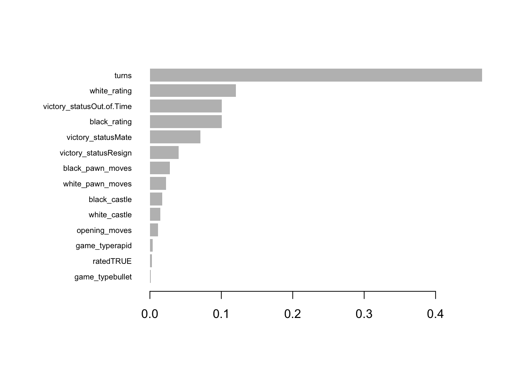

# Load required libraries
library(this.path) # find where you are
# Note current script location
current_script_directory <- this.dir()
# Source some local code
source(file.path(current_script_directory, "All_Code.R"))A Statistical and Machine Learning Approach to Identifying Key Predictors of Winners of Chess Games
Stats 5405 Final Project
Abstract
We have been contacted by an aspiring chess tutor who would like to gain a greater understanding of what he should teach and what he should expect from his students’ games. This tutor has provided us with a dataset of over 20,000 games completed on the website lichess.com. Each game has data including each move of the game, the ratings of the players, the time format of the game, the opening used, the winner, and the method of victory (if the result was not a draw). To do this, we will use our understanding of R to clean the data and create new columns from the game data provided to us. Additionally, we will look into using the package chess to aid in both our analysis of the games and in feature engineering. We will then use the GLIM methods we have learned in class with other investigative resources (such as decision trees and gradient boosting) to answer questions the chess tutor may have about the games.
Introduction
Much can be made of the remarkable staying power of chess. Though early versions of the game have existed for over a millennium, it continues to permeate the zeitgeist of society into the present both as an intellectual exercise and as a way to pass time with friends. Recently, the development of superhuman chess engines such as Stockfish, the success of shows such as Netflix’s The Queen’s Gambit, and the explosion of online chess have contributed to a larger renaissance of the game. As a historical artifact and as a cultural fad, chess has solidified an economic legitimacy that many people are capitalizing on. Professional players, chess teachers, and online content creators alike have attempted to bring the game to the masses in exchange for money. Because of this, it is essential that an instructor must give the best advice possible, and know as much about the game as they can, as their livelihood (and the future and tradition of chess itself) could depend on it. In our hypothetical scenario, we have been consulted by a prospective chess teacher. This teacher has provided us with a data set with rows which represent individual games played by online competitors. There is information regarding the competitors themselves, the structure of the game, and significantly, the moves of the game themselves. Our task is to use those factors to predict the outcome of the game. There are a number of reasons why our predictions could be useful. The teacher could use our findings to emphasize certain playing styles and de-emphasize others during lessons. Additionally, they could scout players for tutoring who show positive tendencies as dictated by our models. The goal is to legitimize the teaching process and reputation of our teacher through the use of methodology we have explored in class. Our investigation was provoked by a published piece of academic literature entitled Predicting the Outcome of a Chess Game by Statistical and Machine Learning Techniques by Hector Apolo Rosales Pulido. In the paper, Pulido uses positions of games after twenty moves to predict eventual outcomes. Although we decided to arrive at our predictions through different means, partially owing to the fact that his dataset was over three million rows in length, we found that the problem Pulido attempted to solve was worth investigating for ourselves.
Data Description
Our data set, which can be found here, has 20,058 rows, each representing a complete game of chess played on the popular website lichess.com. The 17 columns are described below:
game_id: A unique integer identifier.rated: A boolean variable that is TRUE if the game was rated.turns: An integer variable showing the number of moves in the given game.victory_status: A character variable taking on one of “Out of Time”, “Resign”, “Mate”, or “Draw”. Describes how the game ended.winner: A character variable taking on one of “White”, “Black”, or “Draw”. Describes the winner.time_increment: A character variable describing the timing requirements. For example “15+2” denotes a 15 minute match, with 2 seconds added after each move.white_id: A character variable showing the user name of the user playing white.white_rating: An integer variable showing the Elo rating of the user playing white.black_id: A character variable showing the user name of the user playing black.black_rating: An integer variable showing the Elo rating of the user playing white.moves: A character variable enumerating each move made.opening_code: A character variable describing the ECO (Encyclopedia of Chess Openings) encoding of the opening played.opening_moves: An integer variable describing the number of moves in the opening.opening_fullname: A character variable showing the full name of the opening.opening_shortname: A character variable showing the shortened name of the opening.opening_response: A character variable showing black’s response to the opening.opening_variation: A character variable showing the variation of the opening.
Our chess tutor hypothesized that castling earlier, and pushing pawns frequently might result in more wins. This led us to add 5 additional columns based on the overall moves of the game. To accomplish this, we wrote some custom functions to read the list of moves for each game and pick out when these key moves occurred. These 5 columns are described below:
white_castle: An integer variable describing the move on which white castled. 0 if white did not castle.black_castle: An integer variable describing the move on which black castled. 0 if black did not castle.white_pawn: An integer variable describing the number of times a white pawn was moved.black_pawn: An integer variable describing the number of times a black pawn was moved.game_type: A character variable taking on one of “rapid”, “blitz”, or “bullet”. Variable is “bullet” if the time limit of the match is less than 5, “blitz” if it’s less than 10, and “rapid” otherwise.
After this feature engineering, we decided that some variables would not lend themselves well as predictors to the type of analysis we wished to do. We trimmed our data set accordingly, one-hot encoded categorical variables.This resulted in a final data frame of 14 predictors (see the statistical methods section for a discussion on which predictors we chose to keep).Finally, we chose a 90-10 train-test split which resulted in 18,036 training observations, and 2,004 testing observations.
Goal
As mentioned above, our goal is to apply statistical and machine learning methods to identify factors that most greatly influence the outcome of a chess game. Our hypothetical chess tutor gave us a few questions he wanted us to answer: Are the ELO ratings of the players good predictors of the winner? What are other good predictors of the winner? Do certain moves result in more wins? Does the timing of certain moves result in more wins? Do quicker matches result in fewer mates?
In terms of the data, our goal is to build a handful of models with a sufficiently high predictive power from which we can extract feature importance information.
Statistical Methods
As the response variable of our data set is categorical, we will initially use GLIM procedures to construct our predictive models. The potential outcomes– a white victory, a draw, and a black victory– may be considered ordinal by some, where the aforementioned ordering is of decreasing “success” for the competitor playing white. Under this assumption, we will model cumulative logits by utilizing the polr() function. We will fit a model using all of our relevant predictors, a model using none of our predictors, and a model that has undergone stepwise selection, and then we will compare these to determine which is most appropriate for general use. We will finally assess the best model’s accuracy on both the train and test portion of the data.
The outcome variable we are studying is unique in that there is a legitimate argument to be made that the three categories may also be nominal. Because of this, we can use slightly different methods to build a model under this assumption. We will use the multinom() function to construct this model and then we can compare its accuracy to that of the best ordinal model.
Additionally, we can examine only decisive games. This is a valid way to examine data because a high percentage (over 95%) of the examples in our dataset were either white or black victories. Though many professional games end in draws, a higher percentage of amateur games tend to be decisive. If we filter the data in this way, we can use binary GLIM methods to construct a predictive model. We will build a model based on all of our predictors, a model based on none of our predictors, and finally a model based on predictors selected through stepwise means. We can compare these and assess which is the most adequate via accuracy metrics and AUC comparisons.
Beyond GLIM models, we wish to identify any non-linear relationships that may exist between predictors and the outcome of interest. To achieve this, we will choose to use XGBoost. When building our XGBoost model, we will use a softmax objective function to describe the multi-class outcomes. We also hypothesize that a relatively simple model, with a fairly shallow tree, will be best suited for our purposes. For our evaluation method, we will use merror. This describes the number of wrong cases / the total number of cases. We plan to train our model for several iterations beyond that which was shown as examples in class. Finally, to extract feature importance information, we will use the xgb::importance() function which calculates a quantity called gain. As described in the documentation of XGBoost, “Gain is the improvement in accuracy brought by a feature to the branches it is on”.
Results from the analyses
This block of code allows us to reference variables created in All_Code.R. Hopefully, it should help keep our results section nice and tidy. I also changed the way the 5 new columns are added, it’s quicker and more succinct, but still takes about 45 seconds on my machine.
First, we construct a model under the assumption that the outcome is ordinally distributed. For this segment of the analysis, we will use the following variables: rated, turns, white_rating, black_rating, opening_moves, white_castle, black_castle, white_pawn_moves, black_pawn_moves, and game_type. After ascertaining that the test and train portions of the data had similar shapes, and checking that the chosen features did not exhibit multicollinearity, we constructed null, full, and stepwise models using the polr() function to predict the outcome for chess games. As the stepwise model had the lowest AIC value of the three, it was selected for examination of performance on the train and test sets.
summary(mod.s)
Re-fitting to get HessianCall:
polr(formula = as.factor(winner) ~ black_rating + white_rating +
black_castle + white_castle + black_pawn_moves + white_pawn_moves +
opening_moves + rated, data = df2.train)
Coefficients:
Value Std. Error t value
black_rating 0.003655 8.711e-05 41.956
white_rating -0.003585 8.549e-05 -41.931
black_castle 0.024542 2.732e-03 8.983
white_castle -0.023367 2.855e-03 -8.186
black_pawn_moves 0.046378 4.940e-03 9.388
white_pawn_moves -0.027254 4.938e-03 -5.519
opening_moves -0.013824 5.929e-03 -2.332
rated -0.073005 3.947e-02 -1.850
Intercepts:
Value Std. Error t value
1|2 0.1087 0.0033 32.7691
2|3 0.3299 0.0083 39.8588
Residual Deviance: 27704.79
AIC: 27724.79 coef.table2 Value Std. Error t value p value
black_rating 0.003654779 8.710969e-05 41.956059 0.000000e+00
white_rating -0.003584770 8.549273e-05 -41.930698 0.000000e+00
black_castle 0.024541644 2.732100e-03 8.982705 2.641903e-19
white_castle -0.023366715 2.854544e-03 -8.185795 2.705128e-16
black_pawn_moves 0.046378370 4.940108e-03 9.388128 6.107603e-21
white_pawn_moves -0.027253737 4.937912e-03 -5.519283 3.403847e-08
opening_moves -0.013824394 5.928685e-03 -2.331781 1.971223e-02
rated -0.073005427 3.946890e-02 -1.849695 6.435750e-02
1|2 0.108735985 3.318253e-03 32.769050 1.625730e-235
2|3 0.329921610 8.277264e-03 39.858776 0.000000e+00We will now interpret this output. The model chose 8 of the predictors, 7 of which are significant at the \(\alpha=0.05\) level. If there were no predictors, the log odds of white winning relative to a draw or a black win is 0.14924. That is, the odds of a white win relative to a draw or black win are \(e^{0.1087} = 1.1148\). If there were no predictors, the log odds of white winning or a draw relative to a black win is 0.3299. That is, the odds of a white win or draw relative to a black win are \(e^{0.3299)} = 1.3908\). Let us now interpret the coefficient black_castle. At the \(\alpha=0.05\) level, black_castle is significant. The predicted coefficient for black_castle is 0.02454. If a black castle is delayed by one move, with all other predictors fixed, we expect log odds of each level to increase by 0.02424. The effect is to multiply the odds in each level by \(e^{0.02454} = 1.0245\) for each move increase in black_castle.
We will now assess the accuracy of this model on train and test data.
round((sum(diag(ctable.pred3.train))/sum(ctable.pred3.train))*100, 2) #train data accuracy[1] 62.93round((sum(diag(ctable.pred3.test))/sum(ctable.pred3.test))*100, 2) #test data accuracy[1] 61.43With a 61.43% correct classification rate, the ordinal model does a fair, if not ideal, job of fitting new data. Interestingly, if concerningly, the model seems hesitant to ever predict a draw, and more likely to predict a white victory than it should.
ctable.pred3.test
1 2 3
1 717 51 378
2 0 0 0
3 297 47 514TODO: nominal, binary
Upon building some generalized linear models, we decided to investigate any non-linear or more nuanced relationships that might exist between predictors and the game winner, our outcome of interest. Such relationships were found using a gradient boosted model.
After several iterations of hyper parameter tuning, and some feature engineering (described above), our gradient boosted model achieved high accuracy on both the training and test sets when predicting the game winner: 93.96% and 87.97% respectively. This allowed us to extract important features.
imp Feature Gain Cover Frequency
1: turns 0.465298933 0.5549879191 0.262334955
2: white_rating 0.120360158 0.1381346378 0.167824878
3: victory_statusOut.of.Time 0.100666640 0.0019367674 0.017025712
4: black_rating 0.100407632 0.1324699050 0.159833218
5: victory_statusMate 0.070744615 0.0070279676 0.014593468
6: victory_statusResign 0.040438542 0.0131138997 0.057678944
7: black_pawn_moves 0.027818365 0.0370287021 0.062195969
8: white_pawn_moves 0.022790625 0.0402312351 0.058026407
9: black_castle 0.017434709 0.0231626568 0.056636553
10: white_castle 0.014728179 0.0245010355 0.057331480
11: opening_moves 0.011214721 0.0187495289 0.052466991
12: game_typerapid 0.003960111 0.0035933195 0.017373176
13: ratedTRUE 0.002758160 0.0044575061 0.011118833
14: game_typebullet 0.001378610 0.0006049195 0.005559416The above table enumerates a few metrics for each predictor. The docs for XGBoost explained each clearly: “Gain is the improvement in accuracy brought by a feature to the branches it is on. Cover is related to the second order derivative (or Hessian) of the loss function with respect to a particular variable; thus, a large value indicates a variable has a large potential impact on the loss function and so is important Frequency is a simpler way to measure the Gain. It just counts the number of times a feature is used in all generated trees.”
Below, is a plot of Gain for each predictor.
xgb.plot.importance(imp)
Of particular interest here is the most important feature: turns. While the GLIM models ran previously helped us to observe that a linear relationship exists between the players rating and the outcome as well as between key moves and outcome, they did not report turns as an important feature.
Observe below that for games with less than the average number of turns, there was a smaller proportion of draws. It seems that longer games tend to end in draws more frequently.
t0 <- table(df[df$turns < mean(df[,"turns"]), ]["winner"])
t0 / sum(t0)winner
Black Draw White
0.4538509 0.0257311 0.5204180 t1 <- table(df[df$turns >= mean(df[,"turns"]), ]["winner"])
t1 / sum(t1)winner
Black Draw White
0.45498671 0.07592742 0.46908587 I performed three statistical tests. The first compared the proportion of draws between games with low turns and games with high turns. The second two did the same, but for proportion of black wins and proportion of white wins respectively.
res1 <- prop.test(x = c(t0["Draw"], t1["Draw"]), n = c(sum(t0), sum(t1)), correct = FALSE)
res1$p.value[1] 1.285868e-61res2 <- prop.test(x = c(t0["Black"], t1["Black"]), n = c(sum(t0), sum(t1)), correct = FALSE)
res2$p.value[1] 0.872916res3 <- prop.test(x = c(t0["White"], t1["White"]), n = c(sum(t0), sum(t1)), correct = FALSE)
res3$p.value[1] 6.073604e-13At the \(\alpha = 0.05\) significance level, we can see that there is evidence to conclude that games with a lot of turns result in draws more frequently than games with few turns. We also have evidence to conclude that games with a lot of turns result in white winning less frequently than in games with few turns. In the case of black winning, we fail to reject the null hypothesis and conclude that the two proportions (in short games versus long games) of black winning are equal.
Summary and conclusion
1-2 pages. Did you achieeve your goal? Which method (out of what you tried) do you prefer? What other extensions are possible in the future?
References
you can include references for the data, and prior work you may have referred to.